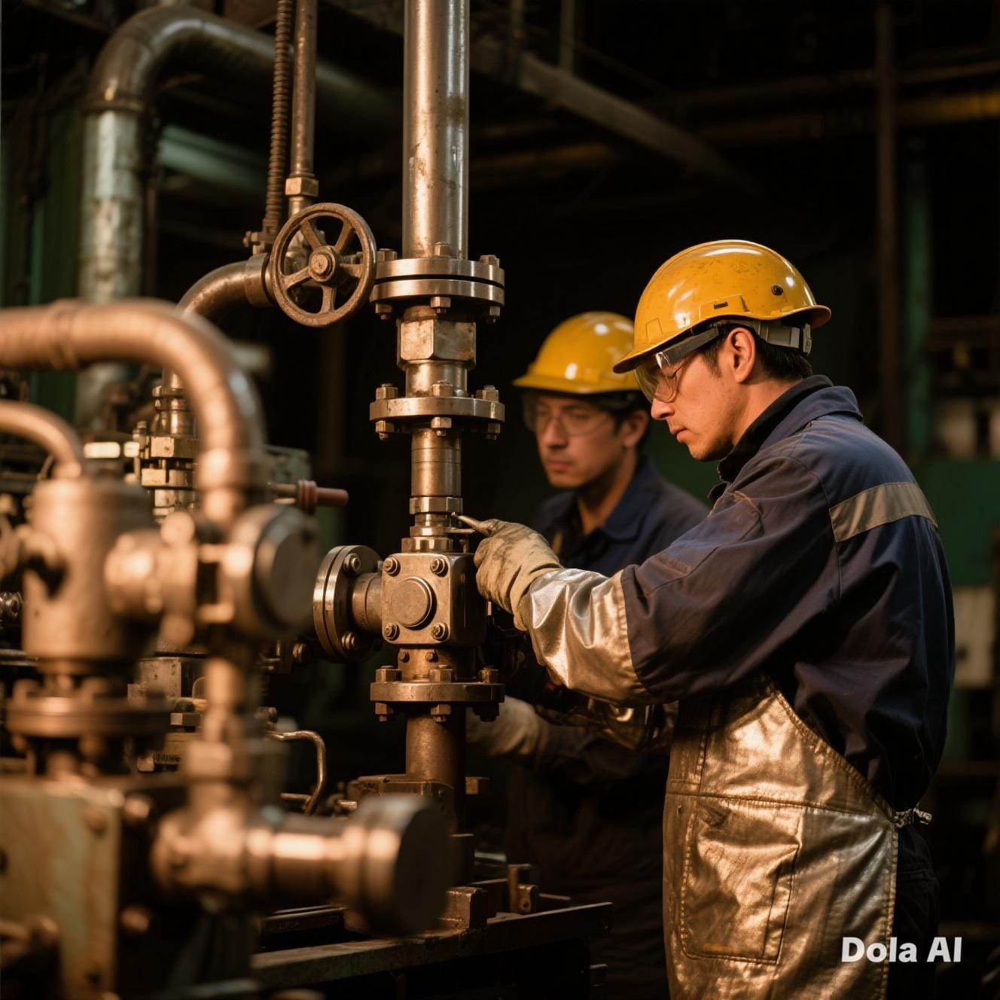
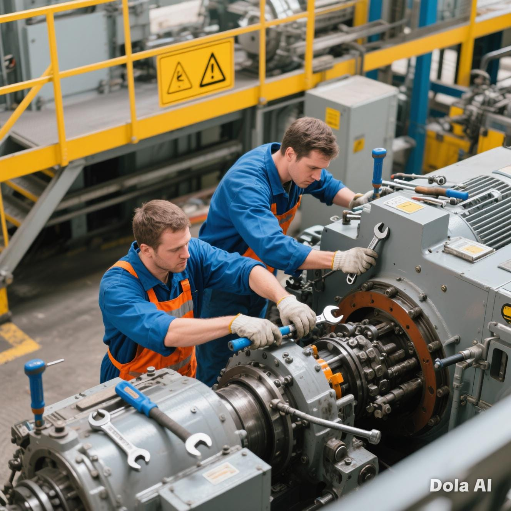
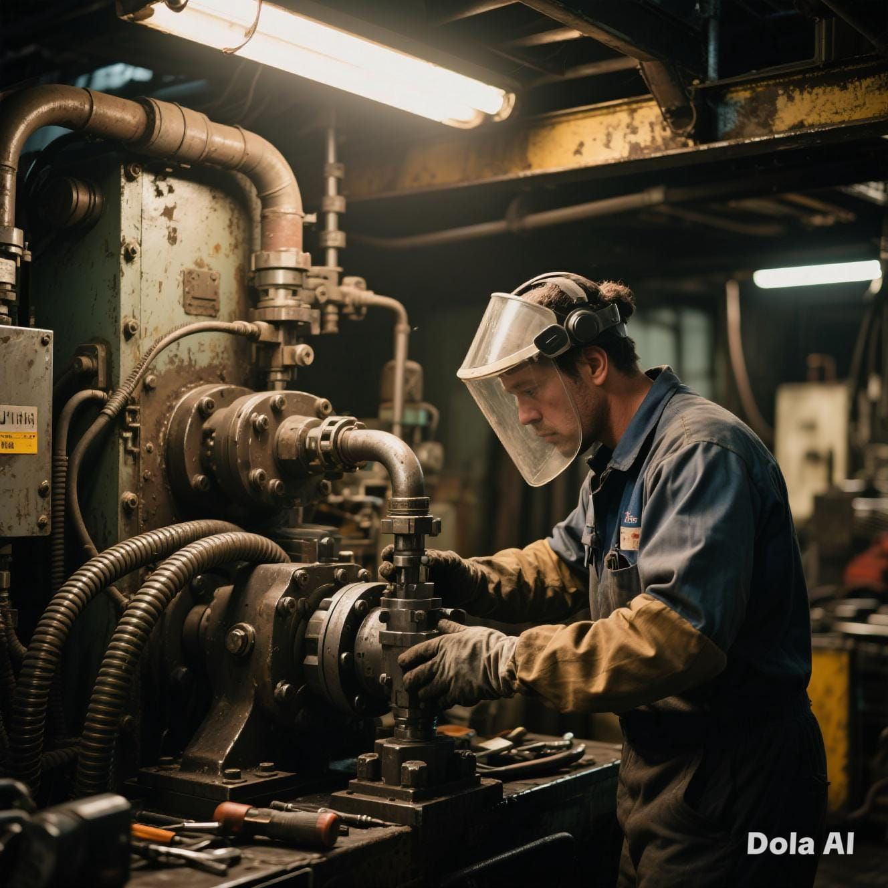
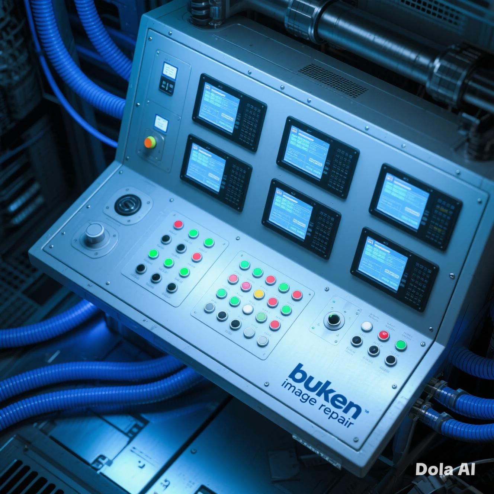
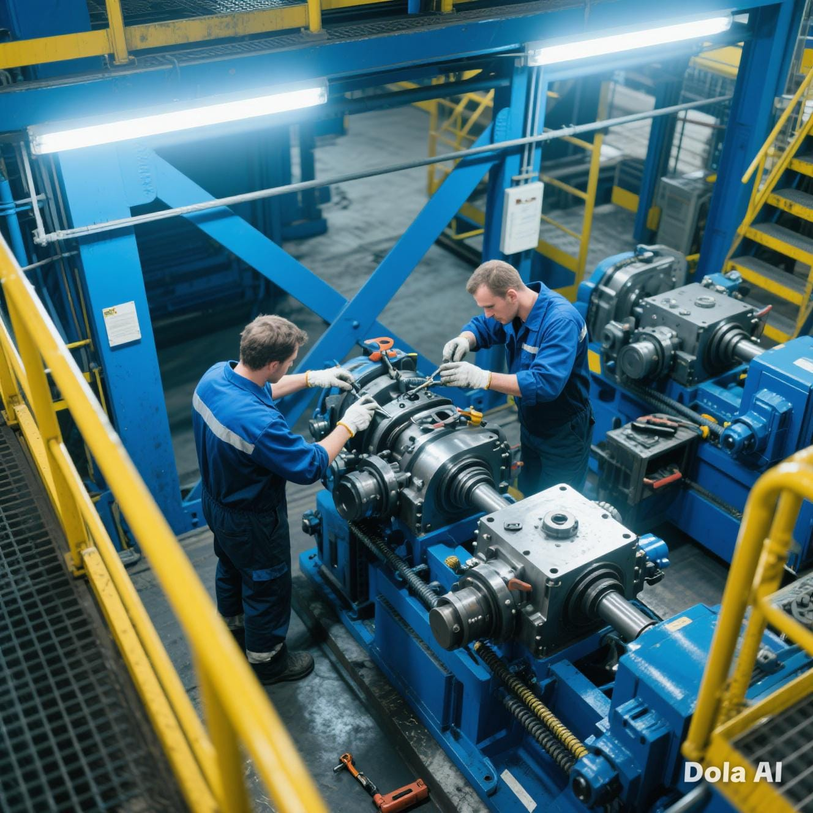

Overhaul Mesin Produksi
Optimasi sistem produksi untuk efisiensi maksimal.

Maintenance Line A
Perawatan rutin line produksi untuk menjaga kestabilan output.

Repair Sistem Hidrolik
Perbaikan sistem tekanan tinggi dengan penggantian seal & filter.

Upgrade Sistem Kontrol
Peningkatan otomatisasi & efisiensi produksi dengan SCADA terbaru.

Overhaul Mesin Cetak
Pembongkaran, penggantian komponen, & optimasi mesin cetak utama.

Maintenance Preventive
Program maintenance rutin untuk mengurangi downtime & meningkatkan umur mesin.